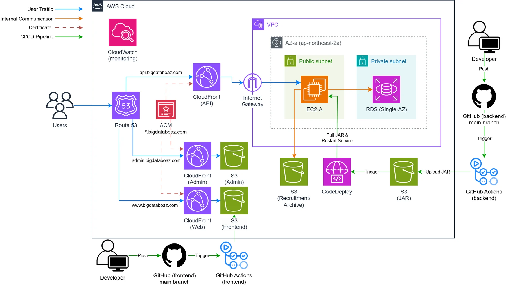
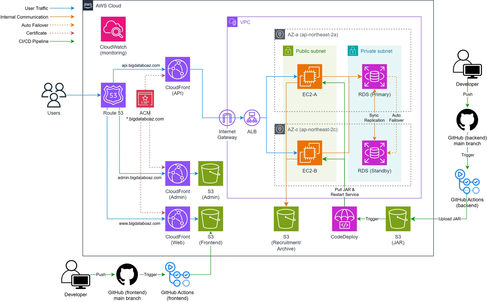
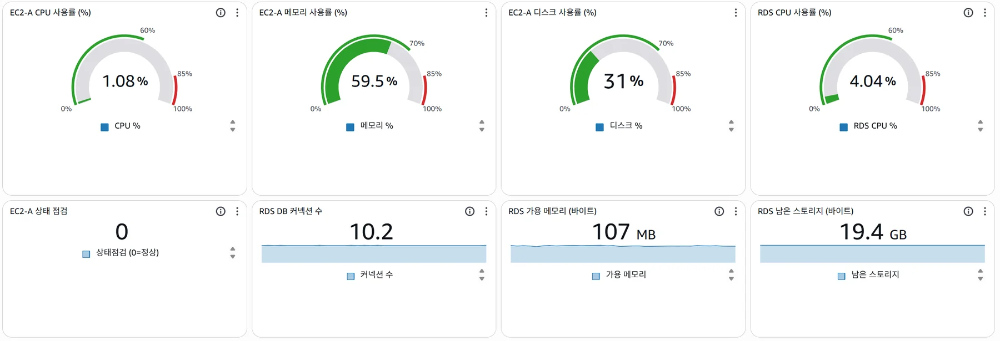
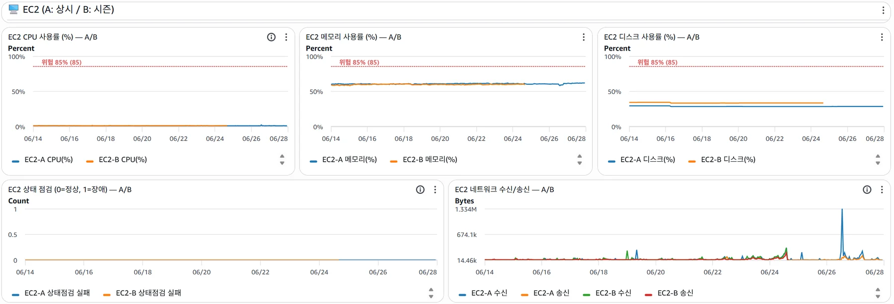

BOAZ 공식 웹 사이트
현재 운영 중인 빅데이터 연합 동아리 BOAZ의 공식 웹 사이트입니다. 동아리 정보와 활동 기록을 제공하고, 반년마다 신규 기수를 모집합니다.
- 소속
- 빅데이터 연합 동아리 BOAZ
- 기간
-
2026.02 – 현재 (운영 및 고도화)
- 1차: 웹 사이트 개발 (2026년 상반기)
- 2차: 관리자 페이지 개발 및 AWS 인프라 IaC(Terraform) 마이그레이션 준비 중
- 팀
- 10인 (디자인 4, PM 1, 프론트엔드 2, 백엔드 3)
- 역할
- 백엔드 PM
- 주요 업무
-
- 백엔드 팀 PM
- 신규 기수 지원 모집 및 평가, 관리자 기능 개발
- AWS 인프라 설계 및 구축
- 실서비스 운영
- 서비스 특성
-
- 6개월에 1회, 2주만 모집
- 평시는 조회 위주, 마감 직전 동시 제출이 피크
- 지원서에 개인정보 포함
- 성과
- 제24회 BOAZ 컨퍼런스 오프닝 세션 발표 (2026.07.25)
01
인프라 설계 의사결정 (1): 보안과 비용의 경계
초기에는 개인정보를 다루는 사이트인 만큼 보안을 최우선으로 설계했습니다.
구성 비교
| 구성 | 보안 | 월 비용 | 추가 인프라 |
|---|---|---|---|
| ALB + 프라이빗 EC2 (초기 설계) | 최상 | ~$70–75 | Interface Endpoint, Bastion Host |
| 퍼블릭 EC2 | 오리진 노출 | 최저 | – |
| CloudFront + 퍼블릭 EC2 (최종 설계) | 직접 접근 차단 | ~$43.5 | – |
다시 판단한 근거
- 부하 테스트 결과: 마감 피크에도 t3.small 한 대로 충분 → ALB 로드밸런싱이 상시로 필요하지 않음
- 프라이빗 구조를 유지하려면 CodeDeploy용 Interface Endpoint, 운영 접속용 Bastion Host가 필요 → 보안을 위해 프라이빗으로 격리해 놓고 다시 통로를 만드는 구조
- 학생 동아리라는 특성상 비용을 최소화할 필요
최종 구조
- Route 53 → CloudFront(API / Admin / Web 분리) → 퍼블릭 서브넷 EC2, 프라이빗 서브넷 RDS(Single-AZ)
- 프론트엔드·관리자 페이지는 S3 + CloudFront로 정적 배포, ACM 와일드카드 인증서
- 백엔드는 GitHub Actions → S3(JAR) → CodeDeploy로 배포

지켜야 하는 보안을 오리진 직접 접근 차단 + DB 격리로 정의하고, 이를 유지하면서 고정비와 복잡도를 줄이는 선택을 했습니다.
02
인프라 설계 의사결정 (2): 고가용성은 연 4주만
신규 기수 모집은 1년에 두 번, 2주 동안 진행됩니다. 그 기간에는 서비스가 끊기면 안 된다는 요구 사항이 있었습니다.
시즌제 전환

모집 기간에 추가되는 인프라
- EC2 총 두 대 운영 → ALB로 로드밸런싱
- RDS Multi-AZ 활성화
전환 범위를 최소화한 설계
- 사용자 진입점(도메인, 인증서)은 그대로 두고 CloudFront origin만 교체
- 예비 EC2는 모집 기간이 끝나면 stopped → 인스턴스 ID가 고정되어 대시보드와 에이전트 재설정 불필요
- CodeDeploy 배포 그룹을 태그 기준으로 잡아 서버 대수가 바뀌어도 파이프라인은 그대로 유지 (태그가 붙은 stopped 인스턴스는 배포 실패가 되므로 시즌 전환 시 태그를 탈부착)
- 시즌 전환 과정을 Bash 스크립트로 묶어 자동화
비용 효율화
| 구간 | 구성 | 월 비용 |
|---|---|---|
| 평시 | EC2 1대 + RDS Single-AZ | $50 안팎 |
| 모집 시즌 | EC2 2대 + ALB + RDS Multi-AZ | $113 |
고가용성 비용을 연 4주에 한정해 상시 이중화 대비 연 40% 이상 절감했습니다.
03
운영 모니터링 및 알람 (CloudWatch + SNS)
대시보드를 두 개로 나눈 이유
평시와 모집 시즌은 인프라 구성이 다르므로 봐야 할 것도 다릅니다.
- 평시: EC2 단독 + RDS. "지금 정상인가"를 게이지로 즉시 확인
- 시즌: EC2 두 대 + RDS의 모든 지표를 시계열로. NetworkIn을 A·B 같은 그래프에 올려 failover 시 A↓ B↑ 전환을 즉시 확인


알람 12종 → SNS → 이메일
대시보드를 보지 못할 때 문제가 생겨도 담당자에게 이메일로 알람이 가도록 설정했습니다.
| 알람 | 임계 | 근거 |
|---|---|---|
| RDS 커넥션 수 | > 50 / 5분 | db.t3.micro 상한 약 60. 풀이 포화되면 HikariPool 대기 타임아웃으로 500 발생 → 상한에서 여유 10을 둠 |
| EC2 메모리 | > 80% / 10분 | Spring Boot 힙 설정 오류 시 t3.small 2GB에서 OOM. 기본 메트릭에 없어 CloudWatch Agent 설치 후 수집 |
| EC2 디스크 | > 80% / 10분 | EBS 20GB. 로그가 쌓여 꽉 차면 Spring Boot가 로그를 못 써 장애로 이어짐 |
| CPU (EC2, RDS) | > 80% / 10분 | t3 버스트 인스턴스라 크레딧 소진 전 대응 필요. 단발 스파이크를 거르려 10분 지속 조건 |
한계: 자원 지표 중심이라 사용자가 실제로 성공하고 있는지는 보이지 않습니다. 이 한계는 아래 트러블슈팅에서 실제로 드러났습니다.
04
트러블슈팅: CloudFront 에러 TTL
"관리자 로그인이 자꾸 실패해요. 그런데 3~4분 정도 지나니 복구됐어요"
원인 파악 과정
- 다른 브라우저에서 상황 재현 → 정상
- 서버 로그 확인 → 이상 없음 → 앱 코드 원인에서 배제
- CloudFront 설정 확인 → 원인 발견
원인
CloudFront(api)에 CachingDisabled를 걸어 뒀지만 캐시 정책과 에러 응답 TTL은 별개였습니다. 4xx/5xx 응답이 기본 TTL로 캐싱되어, 서버가 정상이어도 캐시된 에러가 계속 내려갔습니다.
해결
403 · 404 · 500 · 502 · 503 · 504 에러 응답의 최소 TTL을 0으로 변경했습니다.
회고: 이 증상은 EC2와 RDS 자원 지표만으로는 드러나지 않습니다. CloudFront 5xx·응답 지연을 Tier 2로 설계해 뒀지만 실제로는 반영하지 못한 상태였고, 결국 사용자 제보로 알게 됐습니다.
서비스 앞단에서 사용자가 실제로 성공하고 있는지를 보는 지표가 필요하다는 것을 확인했습니다.